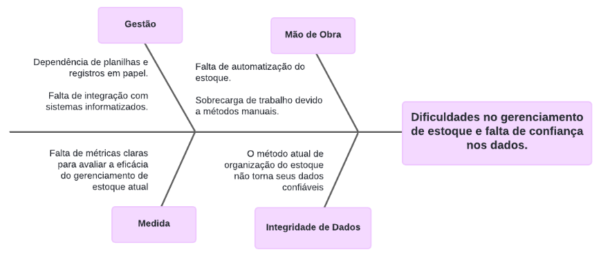
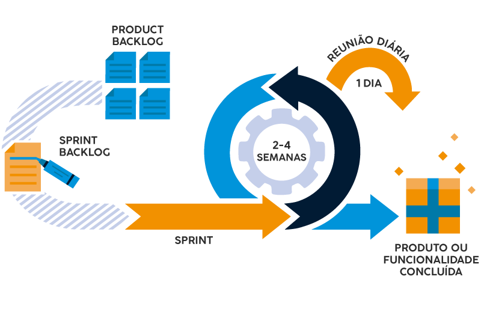

Visão do Produto e Projeto
Histórico de Revisão
| Data | Versão | Descrição | Autor |
|---|---|---|---|
| 08/04/2024 | 1.0 | Criação do documento | Carlos Eduardo; Eric Rabelo; Paulo Henrique; Samara Letícia; Sunamita Vitória; Wolfgang Friedrich |
| 16/04/2024 | 2.0 | Preenchendo seções de visão geral do projeto e de lições aprendidas | Eric Rabelo; Paulo Henrique; Wolfgang Friedrich |
| 17/04/2024 | 2.1 | Criação do Gerenciamento de Riscos e planejamento das fases e/ou Iterações do Projeto | Carlos Eduardo; Júlia Takaki; Samara Letícia |
1. Visão do Produto e Projeto
1.1 Problema
Foi identificado que o cliente está utilizando planilhas e, por vezes, até papel para realizar o gerenciamento de estoque de sua empresa. O uso de planilhas e registros em papel é propenso a erros, tais como duplicação e perda de dados, além de demandar um tempo significativo para atualização. A falta de um sistema centralizado dificulta o rastreamento do histórico de movimentação de estoque, como entradas e saídas, e também não oferece recursos de geração de relatórios e extratos, o que pode dificultar análises de desempenho do estoque e a identificação de tendências ou problemas.

Imagem 1 - Diagrama de Ishikawa
- Solução de Software Proposta: Nosso software representa uma aplicação web que oferece uma abordagem prática e em tempo real para pesquisar e avaliar os professores da FGA. A proposta nasce em um contexto de ineficácia da avaliação e consulta de outras avaliações dos docentes da FGA, como pode ser contemplado no diagrama de ishikawa acima. O propósito central desta ferramenta é criar um ambiente seguroe anônimo onde estudantes, tanto novos quanto veteranos, possam compartilhar suas opiniões sobre os professores e as disciplinas ministradas na Faculdade do Gama (FGA).
1.2 Declaração de Posição do Produto
Tabela 1 - Visão do Produto
| Para: | Construmix. |
|---|---|
| Quem: | Equipe DataDiggers. |
| O Data Mix: | É um app. |
| Que: | Auxilia na organização de estoque do cliente. |
| Ao contrário: | De ter que fazer o controle de estoque em planilhas de Excel. |
| Nosso produto: | Terá uma pegada maior a interação humano computador voltado aos desejos do cliente, de tal forma a satisfazer as suas necessidades de controle, mantendo a integridade dos dados. |
O produto proposto é um App que busca resolver os problemas de gestão de estoque e controle de vendas de uma loja de materiais de construção. Atualmente, o cliente utiliza planilhas excel para fazer o controle do estoque da loja, o que,além de não garantir a integridade dos dados, também consome muito tempo e esforço. O público alvo do DataMix serão os funcionários da loja de construção CONSTRUMIX. Nossa aplicação busca automatizar o controle do estoque dos produtos e fornecer uma informação detalhada do fluxo de caixa da loja.
1.3 Objetivos do Produto
Auxiliar na organização de estoque de produtos e controle de fluxo de caixa da loja de materiais de construção CONSTRUMIX.
1.4 Tecnologias a Serem Utilizadas
- GitHub: Utilizado para gerenciamento de código-fonte, controle de versão e colaboração entre a equipe.
- Visual Studio Code: Usado para desenvolver o projeto.
- Discord: Uma plataforma de comunicação e colaboração que auxilia na comunicação da equipe e reuniões virtuais.
- Google Meet: Uma plataforma de comunicação utilizada pra contatar o cliente.
- WhatsApp: Plataforma de mensagens utilizada para comunicação diária entre os integrantes da equipe.
2. Visão Geral do Projeto
2.1 Organização do Projeto
Tabela 2 – Tabela de Organização
| Papel | Atribuições | Responsavel | Participantes |
|---|---|---|---|
| Desenvolvedor | Codificação do produto, colaboração em equipe, aplicação de práticas técnicas e compromisso com os objetivos do produto. | Eric | Samara Sunamita |
| Scrum Master | Facilitador do processo ágil de desenvolvimento de software, garantindo que a equipe compreenda e siga os princípios do Scrum | Paulo | Julia Carlos |
| Dono do Produto | Atualizar o escopo do produto, organizar o escopo das sprints, validar as entregas | Wolfgang | Eric Paulo |
| Cliente | Fornecimento de requisitos e validação da aplicação. | -- | -- |
2.2 Planejamento das Fases e/ou Iterações do Projeto
Tabela 3 – Planejamento e Sprint
| Sprint | Produto (entrega) | Data Inicio | Data Fim | Entregaveis | Responsáveis | Conclusão |
|---|---|---|---|---|---|---|
| Sprint 0 | Definição do projeto. | 01/04 | 08/04 | Escolha do tema e definição do escopo do projeto. | TODOS | 100% |
| Sprint 1 | Revisão dos fundamentos de Engenharia de Software. | 08/04 | 15/04 | Apresentação sobre os processos e fundamentos de engenharia de software | TODOS | 100% |
| Sprint 2 | Definição do processo de ER. | 15/04 | 22/04 | Visão do produto e projeto | TODOS | |
| Sprint 3 | Elaboração do backlog do produto. | 22/04 | 29/04 | SAFe e User Story. | TODOS | |
| Sprint 4 | Definição do MVP. | 29/04 | 06/05 | Documento de escopo do MVP | TODOS | |
| Sprint 5 | Refinamento do backlog. | 06/05 | 13/05 | Definição de critérios de aceitação. | TODOS | |
| Sprint 6 | User Story Mapping. | 13/05 | 20/05 | Protótipo de telas. | TODOS | |
| Sprint 7 | Modelagem de casos de uso. | 20/05 | 27/05 | Diagrama de casos de uso | TODOS | |
| Sprint 8 | Desenvolvimento do MVP. | 27/05 | 03/06 | Protótipos do MVP | TODOS | |
| Sprint 9 | Desenvolvimento do MVP. | 03/06 | 10/06 | Deploy | TODOS | |
| Sprint 10 | Testes de aceitação. | 10/06 | 17/06 | Planos de teste e casos de teste | TODOS | |
| Sprint 11 | Correções e ajustes finais no software. | 17/06 | 24/06 | Escopo final | TODOS | |
| Sprint 12 | Preparação final para entrega do projeto. | 24/06 | 01/07 | Software final | TODOS |
2.3 Matriz de Comunicação
Tabela 4 – Comunicação do grupo
| Descrição | Área/Envolvidos | Periodicidade | Produtos Gerados |
|---|---|---|---|
| Acompanhamento das Atividades em Andamento (Daily) | Equipe | Diário | Relatório de situação do projeto |
| Planejamento e divisão de tarefas da sprint (Planning) | Equipe | Semanal | Ata de reunião |
| Encerramento e revisão da sprint (Review) | Equipe | Semanal | Ata de reunião |
| Comunicação da situação do projeto | Monitor | Semanal | Relatório de situação do projeto |
2.4 Gerenciamento de Riscos
| Risco | Consequência | Estratégia | Resposta |
|---|---|---|---|
| Desistência da Disciplina | Ter um integrante a menos no grupo significa que os outros integrantes vão ter que trabalhar mais para suprir as atividades daquele integrante. | Mitigar | Manter boa comunicação no time e oferecer ajuda para a disciplina quando um dos membros precisar, para evitar que ele saia da disciplina. |
| Falta de Comunicação com StakeHolders | A falta de comunicação com o Stakeholder pode gerar mal entendidos, na insatisfação do Stakeholder e no desalinhamento do projeto. | Evitar | Realizar reuniões periodicamente com o Stakeholder para que ele esteja ciente de tudo que está se passando no projeto. |
| Conciliar horários | Um mal gerenciamento de horários pode prejudicar o desempenho dos membros em outras matérias da faculdade ou em outros compromissos que eles tenham. | Mitigar | Planejamento antecipado das tarefas, ter prazos bem estabelecidos, respeitar os horários de estudo e de dedicação a disciplina. |
| Escopo do projeto mal definido ou em constante mudança. | Pode acarretar no desalinhamento do projeto, e prejudicar o resultado final do projeto. | Mitigar | Realizar uma análise detalhada dos requisitos do projeto antes do início do desenvolvimento. Utilizar metodologias ágeis que permitam a adaptação a mudanças nos requisitos ao longo do tempo. |
| Subestimação de prazos e recursos. | O mal planejamento de prazos, entregar e recursos pode gerar uma sobrecarga de trabalho em um curto prazo de tempo. | Evitar | Trabalhar respeitando os prazos estabelecidos da disciplina. |
2.5 Critérios de Replanejamento
-
Desvios Significativos de Cronograma: Se o projeto estiver significativamente atrás do cronograma planejado, pode ser necessário replanejar para ajustar as datas de entrega, revisar as dependências entre as tarefas e realocar recursos para recuperar o tempo perdido.
-
Mudanças nos Requisitos ou Escopo: Se houver mudanças significativas nos requisitos do projeto ou no escopo do trabalho, pode ser necessário replanejar para acomodar essas alterações. Isso pode envolver ajustes nos prazos, recursos e custos do projeto.
-
Riscos Emergentes: Se novos riscos surgirem durante a execução do projeto que não foram previstos no plano original, pode ser necessário replanejar para mitigar esses riscos. Isso pode incluir a implementação de novas estratégias de mitigação de riscos ou a realocação de recursos para lidar com os riscos identificados.
-
Mudanças nos Recursos Disponíveis: Se houver mudanças nos recursos disponíveis para o projeto, como restrições orçamentárias ou indisponibilidade de recursos-chave, pode ser necessário replanejar para ajustar o escopo, cronograma e alocação de recursos do projeto.
-
Feedback das Partes Interessadas: Se as partes interessadas fornecerem feedback significativo durante a execução do projeto que indique a necessidade de ajustes no plano, pode ser necessário replanejar para incorporar esse feedback e garantir a satisfação das partes interessadas.
-
Desempenho do Projeto: Se o desempenho do projeto não atender às expectativas em termos de qualidade, custo ou prazo, pode ser necessário replanejar para identificar e corrigir quaisquer deficiências no plano original e melhorar o desempenho geral do projeto.
3.0 Processo de Desenvolvimento de Software

Imagem 2 - Diagrama de Processo de Desinvolvimento de Software
Tabela 4 – Comunicação do grupo
| Nome da Atividade | Método | Ferramenta | Entrega |
|---|---|---|---|
| Planejamento da Sprint | Seleção de itens do Backlog do Produto, discussões em equipe | GitHub Projects (quadro Kanban) | Backlog da Sprint |
| Definição de objetivos (issues) | GitHub e Discord / Google Meet (reunião) | Lista de tarefas estimadas | |
| Execução da Sprint | Desenvolvimento incremental | Visual Studio Code | Incrementos de software |
| Reuniões diárias | WhatsApp / Discord | Progresso diário compartilhado | |
| Revisão da Sprint | Apresentar o que foi concluído | Discord / Google Meet | Sprint finalizada e feedback do cliente |
| Revisão do Backlog do Produto | GitHub Projects revisado (quadro Kanban) | Backlog da Sprint revisado |
4.0 Lições Aprendidas
4.1 Unidade 1
Acompanhamento Regular: Realize reuniões de acompanhamento diárias ou regulares para verificar o progresso das tarefas da sprint. Isso ajuda a identificar atrasos com antecedência.
5.0 Referências Bibliográficas
PMI - PROJECT MANAGEMENT INSTITUTE. Guia PMBOK®: Um Guia do Conhecimento em Gerenciamento de Projetos. 6. ed. Newtown Square, Pensilvânia: PMI, 2017.
Audy, Jorge. Scrum 360: Um guia completo e prático de agilidade. São Paulo: Casa do Código, 2015.